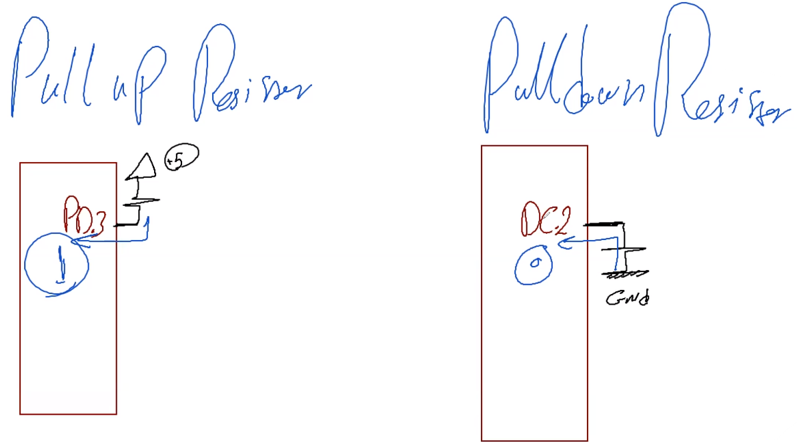

Layered Architecture
Memory
There are three Main Memory types:
- RAM
- ROM
- Pereferal Registers
Any Micro-Controller got a Pereferal registers map which we need to
Define using Macros such that it can be accessed whenever we write or
read from it.
Therfore its decided as a way of management to create a Layered
Architecture or lets say a management system to create any code for
accessability and ability to edit any code easily.
- STD.h: containes the standard definition of data Types.
- BIT_MATH.h: The file that gives you access to create operations on registers.
- MCU.h: Containes the Register Definitions.
STD.h
typedef unsigned char uint8;
typedef signed char sint8;
typedef unsigned short uint16;
typedef signed short sint16;
typedef unsigned long uint32;
typedef signed long sint32;
typedef float float32;
typedef double float64;
BIT_MATH.h
#define SET_BIT(REG,BIT) (REG |= (1<<(BIT)))
#define CLR_BIT(REG,BIT) (REG &=~ (1<<(BIT)))
#define Toggle_BIT(REG,BIT) (REG ^= (1<<(BIT)))
#define GET_BIT(REG,BIT) ((REG >> BIT) & (0X01))
MCU.h
#define PINA (*(volatile char*)0x39)
#define DDRA (*(volatile char*)0x3A)
#define PORTA (*(volatile char*)0x3B)
.......We will understand this deeply in the upcoming seciton......
......We will add to it as long as we go forward with the Pereferals......
What is the Layered Architecture!?
From Top Layer to Bottom:
- Application "APP"
- Hardware Abstracted Layer "HAL"
- Micro-Controller Abstracted Layer "MCAL"
Application
The place where we write only the logic of of the application not dependent on the micro controller Pereferals or the hardware being connected.HAL
Includes all the hardware being connected to the micro controller such as servo-motor, led, button LCD, etc...MCAL
Where you can access the registers of different pereferals connected to the Micro-ControllerDigital Input output
How can any pin work as input and ouput at the same time??
The Secret Component is the Tri-State-Buffer, Look at the image
below as a refrence to the curcuit.
 so let us trace if we entered
1 on C Component of the Tri-State-Buffer(TSB)
so let us trace if we entered
1 on C Component of the Tri-State-Buffer(TSB)
you can find that the
Ouput Circuit will be Enabled and the
Input Circuit will be Disabled
Therfore the First step is to decide the Direction of the the
TSB and we will call it the DDR(Data Direction Register) Second
step is either to define the input value or write the output we wanna
see so the type of memory we will use will be a register and we will
call the input register "PIN" while the
Output register "PORT".
Each register Maps 8 bits which means 8 pins can be controlled in case
of PORT Register or PIN Register or Direction Register.
Now that we understand the components to control any pin lets configure
them all on ATMEGA32 and you can find the information that is gonna be
written below on the DataSheet Register Summary section.
 Now The Code we will implement it in a file called MCU.h
Now The Code we will implement it in a file called MCU.h
MCU.h
We will add to it as long as we go forward with the Pereferals which will contain all the registers definitions
/******************** DIO Regs ********************/
#define PINA (*(volatile char*)0x39)
#define DDRA (*(volatile char*)0x3A)
#define PORTA (*(volatile char*)0x3B)
#define PINB (*(volatile char*)0x36)
#define DDRB (*(volatile char*)0x37)
#define PORTB (*(volatile char*)0x38)
#define PINC (*(volatile char*)0x33)
#define DDRC (*(volatile char*)0x34)
#define PORTC (*(volatile char*)0x35)
#define PIND (*(volatile char*)0x30)
#define DDRD (*(volatile char*)0x31)
#define PORTD (*(volatile char*)0x32)
now lets use the bit math library we already created to help us light a
lid.
- connect a lid to portC Pin7
- write this code down below in the main.c file.
int main(void)
{
SET_BIT(DDRC,7); /*Set the direction of the TSB to be 1 so it will be used as Output*/
SET_BIT(PORTC,7); /*Set the 7th bit to 1 on the PORT Register*/
CLR_BIT(PINC,7); /*Not an important step to put 0 in the PIN REG cuz by default they are all zeros*/
}
Congrats my friend You made the very first functionable code but let me
ask a question are we gonna write these whole three lines every time we
wanna light a led!!!! "we human beings are very lazy 😝 " so let us create
our very first LED Library that can do this for us by refering to
functions.
So lets think about it what are the things we need the LED do what are the functions of an LED!?
- LED_ON()
- LED_OFF()
- LED_TOGGLE(time)
LED.h
#include MCU.h
#include BIT_MATH.h
void LED0_ON(void);
void LED0_OFF(void);
void LED0_TOGGLE(void);
void LED0_INTI(void);
LED.c
#include LED.h
void LED0_ON(void)
{
SET_BIT(PORTC,7); /*Set the 7th bit to 1 on the PORT Register*/
}
void LED0_OFF(void)
{
CLR_BIT(PORTC,7); /*Set the 7th bit to 1 on the PORT Register*/
}
void LED0_Toggle(void)
{
Toggle_BIT(PORTC,7);
}
void LED0_INTI(void)
{
SET_BIT(DDRC,7); /*Set the direction of the TSB to be 1 so it will be used as Output*/
}
Button
What do you think is needed for a button to be Configured???
Yes, I believe you guessed the answer its pin needs to be configured as an INPUT, which means that we will deal with the input memory (PIN REGISTER) yet there is an important matter that we need to talk about first is the button connected with a Pull Down Resistor or a Pull Up Resistor and what are those terms??
Those Terms Tackle the default state of a button whether its absolute value is zero volt or 5 volt to make sure that there is a refrence value we measure from avoiding the noise check the diagram below.

Yet this is not the only noise tackling any mechanical button, the other problem called Bouncing Effect.
Bouncing is the unstable noise till the button is full opened or closed, thankfully there is a software solution for this sort of error which is called the debouncing and it's a delay to the reading of average 10ms-20ms till the signal stabalizes.
BTN.h
#include MCU.h
#include BIT_MATH.h
#include STD.h
void BTN0_INTI(void);
void BTN0_GetValue(void);
BTN.c
#include BTN.h
void BTN9_INTI(void)
{
CLR_BIT(DDRB,0); /*Set the direction of the TSB to be 1 so it will be used as Output*/
}
uint8 BTN0_GetValue(void)
{
uint8 value = 0;
value = GET_BIT(DDRB,0);
/* To make sure that the signal is stable (DeBouncing)*/
while(GET_BIT(DDRB,0) == 1);
_delay_ms(20);
return value
}
What The Hell is "DIO Module"??
Till Now we created files that are very hard to revamp, consider changing the micro controller can you imagine how much work load this can take us to make our application work. So lets apply what was introduced in the layered Architecture part.
1-MCAL Layer
We are going to create a Header File and a c file for the MicroController ATMEGA32 Definitions with the DIO
DIO_MCAL.h
#include "MCU.h"
#include "STD.h"
#include "BIT_Math.h"
#define DIO_PORTA 0
#define DIO_PORTB 1
#define DIO_PORTC 2
#define DIO_PORTD 3
#define DIO_PIN0 0
#define DIO_PIN1 1
#define DIO_PIN2 2
#define DIO_PIN3 3
#define DIO_PIN4 4
#define DIO_PIN5 5
#define DIO_PIN6 6
#define DIO_PIN7 7
#define DIO_PORT_OUTPUT 0xFF
#define DIO_PORT_INPUT 0x00
#define DIO_PIN_OUTPUT 1
#define DIO_PIN_INPUT 0
#define DIO_PORT_HIGH 0xFF
#define DIO_PORT_LOW 0x00
#define DIO_PIN_HIGH 1
#define DIO_PIN_LOW 0
void DIO_SetPortDir(uint8 port, uint8 direction);
void DIO_SetPINDir(uint8 port, uint8 pin, uint8 direction);
void DIO_SetPortValue(uint8 port, uint8 value);
void DIO_SetPinValue(uint8 port, uint8 pin, uint8 value);
void DIO_ReadPinValue(uint8 port, uint8 pin, uint8 *recall_value);
void DIO_ReadPortValue(uint8 port, uint8 *recall_value);
void DIO_TogglePin(uint8 port, uint8 pin);
void DIO_TogglePort(uint8 port);
DIO_MCAL.c
#include "DIO_MCAL.h"
void DIO_SetPortDir(uint8 port, uint8 direction)
{
switch(port)
{
case DIO_PORTA:
DDRA = direction;
break;
case DIO_PORTB:
DDRB = direction;
break;
case DIO_PORTC:
DDRC = direction;
break;
case DIO_PORTD:
DDRD = direction;
break;
default:
break;
}
}
void DIO_SetPINDir(uint8 port, uint8 pin, uint8 direction)
{
switch(direction)
{
case DIO_PIN_OUTPUT :
switch(port)
{
case(DIO_PORTA):
SET_BIT(DDRA,pin);
break;
case(DIO_PORTB):
SET_BIT(DDRB,pin);
break;
case(DIO_PORTC):
SET_BIT(DDRC,pin);
break;
case(DIO_PORTD):
SET_BIT(DDRD,pin);
break;
default:
break;
}
break;
case(DIO_PIN_INPUT):
switch(port)
{
case(DIO_PORTA):
CLR_BIT(DDRA,pin);
break;
case(DIO_PORTB):
CLR_BIT(DDRB,pin);
break;
case(DIO_PORTC):
CLR_BIT(DDRC,pin);
break;
case(DIO_PORTD):
CLR_BIT(DDRD,pin);
break;
default:
break;
}
break;
default:
break;
}
}
void DIO_SetPortValue(uint8 port, uint8 value)
{
switch(port)
{
case (DIO_PORTA):
PORTA=value;
break;
case (DIO_PORTB):
PORTB=value;
break;
case (DIO_PORTC):
PORTC=value;
break;
case (DIO_PORTD):
PORTD=value;
break;
default:
break;
}
}
void DIO_SetPinValue(uint8 port, uint8 pin, uint8 value)
{
switch(value)
{
case (DIO_PIN_HIGH):
switch(port)
{
case DIO_PORTA:
SET_BIT(PORTA,pin);
break;
case DIO_PORTB:
SET_BIT(PORTB,pin);
break;
case DIO_PORTC:
SET_BIT(PORTC,pin);
break;
case DIO_PORTD:
SET_BIT(PORTD,pin);
break;
default:
break;
}
break;
case (DIO_PIN_LOW):
switch(port)
{
case DIO_PORTA:
CLR_BIT(PORTA,pin);
break;
case DIO_PORTB:
CLR_BIT(PORTB,pin);
break;
case DIO_PORTC:
CLR_BIT(PORTC,pin);
break;
case DIO_PORTD:
CLR_BIT(PORTD,pin);
break;
default:
break;
}
break;
default:
break;
}
}
void DIO_ReadPinValue(uint8 port, uint8 pin, uint8 *recall_value)
{
switch (port)
{
case DIO_PORTA:
*recall_value = GET_BIT(PINA,pin);
break;
case DIO_PORTB:
*recall_value = GET_BIT(PINB,pin);
break;
case DIO_PORTC:
*recall_value = GET_BIT(PINC,pin);
break;
case DIO_PORTD:
*recall_value = GET_BIT(PIND,pin);
break;
default:
break;
}
}
void DIO_ReadPortValue(uint8 port, uint8 *recall_value)
{
switch (port)
{
case (DIO_PORTA):
*recall_value = PINA;
break;
case (DIO_PORTB):
*recall_value = PINB;
break;
case (DIO_PORTC):
*recall_value = PINC;
break;
case (DIO_PORTD):
*recall_value = PIND;
break;
default:
break;
}
}
void DIO_TogglePin(uint8 port, uint8 pin)
{
switch(port)
{
case DIO_PORTA:
Toggle_BIT(PORTA,pin);
break;
case DIO_PORTB:
Toggle_BIT(PORTB,pin);
break;
case DIO_PORTC:
Toggle_BIT(PORTC,pin);
break;
case DIO_PORTD:
Toggle_BIT(PORTD,pin);
break;
default:
break;
}
}
void DIO_TogglePort(uint8 port)
{
switch(port)
{
case DIO_PORTA:
PORTA ^= 0xff;
break;
case DIO_PORTB:
PORTB ^= 0xff;
break;
case DIO_PORTC:
PORTC ^= 0xff;
break;
case DIO_PORTD:
PORTD ^= 0xff;
break;
default:
break;
}
}
2-HAL Layer
We are going to create a Header File and a c file for any hardware that is going to use the DIO-Module
LED_HAL.h
#include "DIO_MCAL.h"
#define LED0 0
#define LED1 1
#define LED2 2
void LED_Init(uint8 LED);
void LED_ON(uint8 LED);
void LED_OFF(uint8 LED);
void LED_Toggle(uint8 LED);
LED_HAL.c
#include "LED_HAL.h"
void LED_Init(uint8 LED)
{
switch(LED)
{
case LED0:
DIO_SetPINDir(DIO_PORTC,DIO_PIN2,DIO_PIN_OUTPUT);
break;
case LED1:
DIO_SetPINDir(DIO_PORTC,DIO_PIN7,DIO_PIN_OUTPUT);
break;
case LED2:
DIO_SetPINDir(DIO_PORTD,DIO_PIN3,DIO_PIN_OUTPUT);
break;
default:
break;
}
}
void LED_ON(uint8 LED)
{
switch (LED)
{
case LED0:
DIO_SetPinValue(DIO_PORTC, DIO_PIN2, DIO_PIN_HIGH);
break;
case LED1:
DIO_SetPinValue(DIO_PORTC,DIO_PIN7,DIO_PIN_HIGH);
break;
case LED2:
DIO_SetPinValue(DIO_PORTD,DIO_PIN3,DIO_PIN_HIGH);
break;
default:
break;
}
}
void LED_OFF(uint8 LED)
{
switch(LED)
{
case LED0:
DIO_SetPinValue(DIO_PORTC,DIO_PIN2,DIO_PIN_LOW);
break;
case LED1:
DIO_SetPinValue(DIO_PORTC,DIO_PIN7,DIO_PIN_LOW);
break;
case LED2:
DIO_SetPinValue(DIO_PORTD,DIO_PIN3,DIO_PIN_LOW);
break;
default:
break;
}
}
void LED_Toggle(uint8 LED)
{
switch (LED)
{
case LED0:
DIO_TogglePin(DIO_PORTC,DIO_PIN2);
break;
case LED1:
DIO_TogglePin(DIO_PORTC,DIO_PIN7);
break;
case LED2:
DIO_TogglePin(DIO_PORTD,DIO_PIN3);
break;
}
}
BTN_HAL.h
#include "DIO_MCAL.h"
#include "DIO_MCAL.h"
#define F_CPU 16000000
#include <util/delay.h>
void BTN0_INIT (void);
uint8 BTN0_GetValue (void);
void BTN1_INIT (void);
uint8 BTN1_GetValue (void);
void BTN2_INIT (void);
uint8 BTN2_GetValue (void);
BTN_HAL.c
#include "BTN_HAL.h"
void BTN0_INIT (void)
{
DIO_SetPINDir(DIO_PORTB, DIO_PIN0, DIO_PIN_INPUT);
}
uint8 BTN0_GetValue (void)
{
uint8 value = 0;
DIO_ReadPinValue(DIO_PORTB, DIO_PIN0, &value);
while (GET_BIT(PINB,0) == 1)
_delay_ms(20);
return value;
}
void BTN1_INIT (void)
{
DIO_SetPINDir(DIO_PORTB, DIO_PIN4, DIO_PIN_INPUT);
}
uint8 BTN1_GetValue (void)
{
uint8 value = 0;
DIO_ReadPinValue(DIO_PORTB, DIO_PIN4, &value);
while (GET_BIT(PINB,4) == 1)
_delay_ms(20);
return value;
}
void BTN2_INIT (void)
{
DIO_SetPINDir(DIO_PORTD, DIO_PIN2, DIO_PIN_INPUT);
}
uint8 BTN2_GetValue (void)
{
uint8 value = 0;
DIO_ReadPinValue(DIO_PORTD, DIO_PIN2, &value);
while (GET_BIT(PIND,2) == 1)
_delay_ms(20);
return value;
}